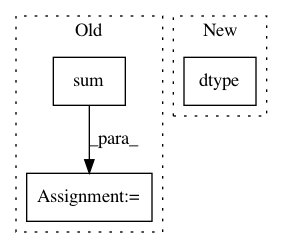

0189ed321c532d8b0ab19fe453487c1c477ff5f4,theanolm/network/softmaxlayer.py,SoftmaxLayer,create_structure,#SoftmaxLayer#,46
Before Change
if self._network.exclude_unk:
output_probs = tensor.set_subtensor(output_probs[:, self._unk_id],
0)
total_probs = output_probs.sum(1)
output_probs /= total_probs[:, None]
// This variable contains probabilities for the whole vocabulary.
self.output_probs = output_probs.reshape([num_time_steps,
num_sequences,
After Change
preact = preact.reshape([num_time_steps * num_sequences,
self.output_size])
if self._network.exclude_unk:
float_type = numpy.dtype(theano.config.floatX).type
log_zero = float_type("-inf")
preact = tensor.set_subtensor(output_prob[:, self._unk_id],
log_zero)
In pattern: SUPERPATTERN
Frequency: 3
Non-data size: 3
Instances
Project Name: senarvi/theanolm
Commit Name: 0189ed321c532d8b0ab19fe453487c1c477ff5f4
Time: 2017-06-03
Author: seppo.git@marjaniemi.com
File Name: theanolm/network/softmaxlayer.py
Class Name: SoftmaxLayer
Method Name: create_structure
Project Name: senarvi/theanolm
Commit Name: 6ceb5009421fc6acb3b9258bc70941b2eb15bc53
Time: 2015-10-03
Author: seppo.git@marjaniemi.com
File Name: theanolm/src/theanolm/trainers/modeltrainer.py
Class Name: ModelTrainer
Method Name: __init__
Project Name: dask/dask-image
Commit Name: f9aea094643fb3240193b0bc0f1908d5b84d82ab
Time: 2018-09-30
Author: jakirkham@gmail.com
File Name: dask_image/ndmeasure/__init__.py
Class Name:
Method Name: center_of_mass